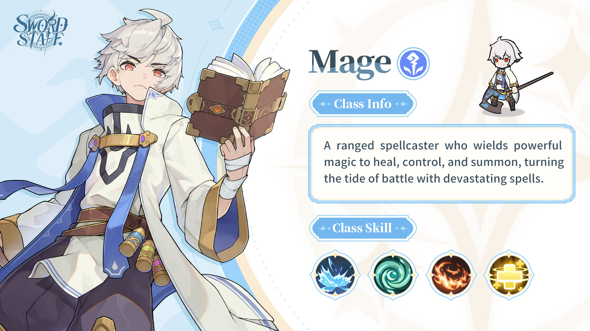

Tổng Quan Các Lớp Nhân Vật

Câu Chuyện Về Các Lớp Nhân Vật]
Trong thế giới của Sword x Staff, hành trình của một anh hùng không chỉ là leo lên đỉnh cao sức mạnh — đó là một sự thức tỉnh tâm linh qua sắt thép và huyền thuật. Từ một lưỡi kiếm đơn sơ hay một cây trượng đã mòn, bạn sẽ đi qua bốn tầng định mệnh, cuối cùng thăng hoa thành một thực thể thần thoại giữa những tầng mây của Dragon Realm (Vương Quốc Rồng).
Khởi Nguyên: Các Lớp Ban Đầu]
Mọi huyền thoại đều bắt đầu từ một lựa chọn căn bản. Bạn sẽ tin vào sức nặng của thép lạnh, hay vào sự cộng hưởng của các nguyên tố?
- Kiếm (Chiến Binh (Warrior)): Tiên phong của chiến đấu cận chiến. Mỗi đòn đánh đều nặng trĩu ý chí, ẩn chứa tiềm năng trở thành một pháo đài phòng thủ hoặc một cỗ máy hủy diệt.
- Trượng (Pháp Sư (Mage)): Người tìm kiếm chân lý huyền thuật. Dẫn dắt năng lượng nguyên thủy thô sơ, Pháp Sư có thể triệu hồi những cơn bão sét tàn phá, hoặc một cơn mưa dịu dàng để chữa lành tâm hồn bị thương.


Phân Nhánh: Chuyển Lớp lần 2]
Khi sức mạnh của bạn tăng lên, con đường của bạn sẽ tách ra. Đây là lúc bản sắc thật sự của nhân vật bắt đầu định hình.
- Chiến Đấu Gia (Fighter): Rũ bỏ giáp nặng để đổi lấy sự nhanh nhẹn tuyệt đối. Họ nhảy múa trên lưỡi dao, dùng những đòn bùng nổ và khả năng chịu đựng phi thường để biến một vết thương suýt chết thành một đòn phản công chí mạng.
- Hiệp Sĩ (Knight): Một tượng đài bất khuất của ý chí cả đội. Khoác giáp tấm và mang khiên khổng lồ, họ tồn tại để chặn đứng những làn sóng tai họa và bảo vệ đồng đội bằng mọi giá.
- Thuật Sư (Sorcerer): Bậc thầy của sự hủy diệt nguyên tố. Họ đánh đổi độ chính xác để lấy quy mô, triệu hồi những phép thuật diện rộng khổng lồ quét sạch chiến trường trong những màn trình diễn phép thuật ngoạn mục.
- Hiền Giả (Sage): Nhà chiến thuật đa năng tối thượng. Dù là triệu hồi thú quen (familiar), thao túng hiệu ứng trạng thái, hay hồi máu kịp thời, họ chính là điểm xoay chuyển cục diện trận chiến.

Tinh Thông: Chuyển Lớp lần 3]
Đến giai đoạn này, các nhà thám hiểm không còn là những người lính đơn thuần — họ là cốt lõi của bất kỳ đội tinh nhuệ nào, đẩy chuyên môn của mình đến giới hạn tuyệt đối.
- Cuồng Chiến (Berserker): Đỉnh cao của cơn thịnh nộ của Chiến Đấu Gia (Fighter). Họ sẵn sàng đốt cháy chính sinh mệnh của mình để đổi lấy một khoảnh khắc bùng nổ sức mạnh tận thế. Họ là những con thú cuồng loạn ở tuyến đầu.
- Thánh Hiệp Sĩ (Paladin) (Hiệp Sĩ Nặng – Heavy Knight): Cốt lõi phòng thủ của cả đội. Bất động như núi, nơi nào khiên của họ đặt xuống, nơi đó trở thành "Vùng Cấm Bay" (No-Fly Zone). Họ là những trụ cột an toàn đáng tin cậy nhất.
- Đại Pháp Sư (Archmage): Kiến trúc sư của chân lý nguyên tố. Họ đã nắm vững những bí mật sâu thẳm nhất của sự hủy diệt hàng loạt, có thể phá tan đội hình địch chỉ bằng một câu thần chú.
- Bí Thuật Sư (Arcanist): Đại chiến lược gia. Bằng cách dệt triệu hồi, hồi máu và khống chế đám đông lại với nhau, họ định đoạt nhịp điệu của chiến tranh, điều khiển kẻ địch như một con rối trên sợi dây.
Huyền Thoại: Chuyển Lớp lần 4]
Khi đạt Cấp 106 và tiến vào Unrakumotogo thuộc Dragon Realm, người thầy Mei sẽ dẫn dắt bạn qua lần thăng hoa cuối cùng. Ở đỉnh cao này, mọi ranh giới biến mất, và những lối chơi linh hoạt nhất sẽ xuất hiện.
(Thăng cấp từ Cuồng Chiến (Berserker))]
Vị chúa tể đã vượt qua các định luật vật lý. Lưỡi kiếm của họ giờ đây cộng hưởng với Thông Thạo Nguyên Tố (Elemental Mastery). Bạn có thể đi theo con đường Combo Vật Lý Truyền Thống (Traditional Physical Combo), hoặc dệt thép và linh hồn lại với nhau trong một lối build Lai Nguyên Tố (Elemental Hybrid) tàn phá.
(Thăng cấp từ Thánh Hiệp Sĩ (Paladin))]
Minh chứng rằng phòng thủ có thể là đòn tấn công tối thượng. Trong khi vẫn duy trì những tấm khiên đẳng cấp thần thánh, họ nhận được các kỹ năng tấn công như Aqua Dance Blade và Luminous Sword Array. Dù bạn chọn Water Knight (Hiệp Sĩ hệ Nước) linh hoạt hay Light Knight (Hiệp Sĩ hệ Ánh Sáng) rực rỡ, kẻ địch sẽ phải học cách sợ hãi cơn thịnh nộ của Thủ Hộ Giả.
(Thăng cấp từ Đại Pháp Sư (Archmage))]
Vật chứa tối thượng của sức mạnh nguyên tố. Khả năng diện rộng (AoE) hệ Ánh Sáng và hệ Lửa của họ được hoàn thiện qua Thunder of Judgment và Secret Fire Core Explosion. Với sự bổ sung của tiện ích Formation Breaker, họ có thể thiêu rụi mối đe dọa đồng thời phá vỡ phòng thủ của kẻ địch.
(Thăng cấp từ Bí Thuật Sư (Arcanist))]
Chiều không gian cao nhất của sự thống trị chiến trường, với ba con đường riêng biệt:
- Shadow Priest: Giải phóng áp lực Bóng Tối đơn mục tiêu đáng sợ với Dark Star Burst.
- Pure Healer (Người Hồi Máu Thuần Túy): Tạo nên phép màu với Rain of Revival và Phantom Light Strategy, đảm bảo cả đội luôn bất tử.
- Summoner (Triệu Hồi Sư): Đánh thức Stone Emperor có độ bền cao, dựng nên một pháo đài sống trên chiến trường mà không bao giờ có thể bị lật đổ.
So Sánh Tổng Quan Các Lớp]
Khi chọn một lớp để chơi, cụ thể là một trong bốn hướng phát triển chính, không có lớp nào "tốt nhất" một cách rõ rệt. Mỗi lớp chuyên về những thứ khác nhau và tất cả đều vẫn hoàn toàn hữu dụng trong mọi mặt của gameplay, đặc biệt nếu bạn chỉ cần tăng chỉ số của mình lên, vì vậy đây chủ yếu là lựa chọn theo sở thích của từng người chơi.
- Hướng Chiến Binh (Warrior) là hướng đơn giản hơn trong hai loại cốt lõi, vì chủ yếu tập trung vào Sát Thương Vật Lý (Physical damage). Không có gì yếu trước nó, nhưng cũng không có gì kháng nó, vì vậy bạn biết rằng bất cứ thứ gì bạn trang bị cũng sẽ có tác dụng. Vững chắc, đáng tin cậy, phòng thủ nhìn chung khá tốt, với nhánh phụ Hiệp Sĩ (Knight) tập trung nhiều hơn vào phòng thủ và bảo vệ đồng đội, trong khi nhánh phụ Đấu Sĩ (Duelist) tập trung nhiều hơn vào sát thương đầu ra. Tuy nhiên, hướng này có tầm đánh khá ngắn, và ngoài một kỹ thuật kéo địch, nó có thể gặp khó khăn khi đối đầu với đối thủ tầm xa né tránh giỏi.
- Hướng Pháp Sư (Mage) là hướng phức tạp hơn trong hai loại cốt lõi vì một số lý do:
- Sự phức tạp chính là việc sử dụng ba Nguyên Tố chính cho các phép thuật: Gió, Nước và Lửa. Gió khắc Nước, Nước khắc Lửa, Lửa khắc Gió. Nhiều kẻ địch thuộc một trong các nguyên tố này, và tất cả đều ít nhất Kháng nguyên tố mà chúng khắc chế, nghĩa là chúng chỉ nhận một nửa sát thương (ví dụ: một sinh vật hệ Nước sẽ chỉ nhận một nửa sát thương từ đòn tấn công hệ Lửa). Một số kẻ địch như slime nguyên tố thì hoàn toàn MIỄN NHIỄM sát thương từ nguyên tố mà chúng khắc chế. Tuy nhiên, chúng lại nhận sát thương tăng mạnh từ nguyên tố khắc chế chúng (ví dụ: Lửa nhận sát thương lớn hơn nhiều từ đòn tấn công hệ Nước). Vì vậy, Pháp Sư sẽ cần lên kế hoạch build trước, chuẩn bị nhiều Bộ Kỹ Năng (Loadout) đã lưu — vừa cho mục đích chung, vừa chuyên hẳn vào từng Nguyên Tố chính — và chuyển sang bộ phù hợp hơn tùy theo kẻ địch mà họ định đối mặt.
- Sự phức tạp còn lại của Pháp Sư và các nhánh phụ của họ là sự đa dạng gần như choáng ngợp của các lối build khả thi. Đòn tấn công nguyên tố và buff, hồi máu, triệu hồi; chỉ với 4 ô kỹ năng và 4 ô bùa, việc đổi chỉ một vài kỹ năng trong số đó cũng có thể hoàn toàn viết lại cách lớp nhân vật vận hành, vì vậy có thể mất một chút thời gian để tự xây dựng những cách bố trí khả thi cho bản thân.
- Nhánh phụ Hiền Giả (Sage) thiên về hỗ trợ và chiến thuật hơn. Họ có phạm vi hồi máu và buff cho cả đội rộng nhất, và họ có thể triệu hồi nhiều loại tay sai (minion) để hỗ trợ chiến đấu. Sát thương thô của họ nhìn chung thấp hơn các lớp khác (có lẽ trừ Hiệp Sĩ), nhưng khả năng hỗ trợ đồng đội của họ thì không ai sánh bằng.
- Nhánh phụ Thuật Sư (Sorcerer) tập trung vào hỏa lực thuần túy. Họ đánh mạnh, đánh rộng, và dù có lẽ là nhánh phụ mong manh nhất trong bốn nhánh, việc họ tập trung tiêu diệt nhanh hàng loạt kẻ địch trước khi bản thân nhận quá nhiều đòn đã bù đắp cho điểm yếu đó.